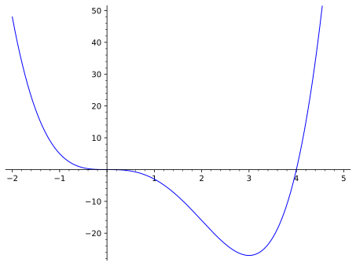
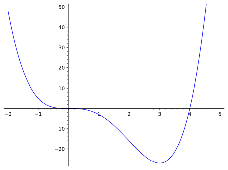
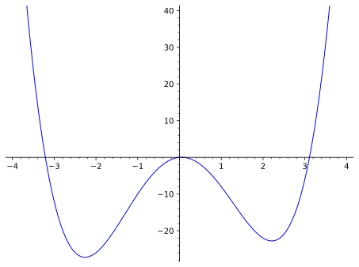
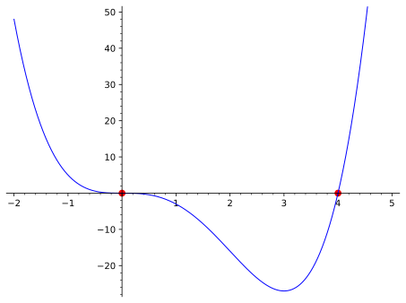
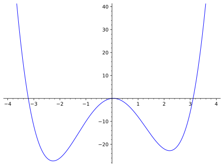

Skip to main content
Contents Dark Mode Prev Up Next \(\newcommand{\N}{\mathbb N} \newcommand{\Z}{\mathbb Z} \newcommand{\Q}{\mathbb Q} \newcommand{\R}{\mathbb R}
\newcommand{\lt}{<}
\newcommand{\gt}{>}
\newcommand{\amp}{&}
\definecolor{fillinmathshade}{gray}{0.9}
\newcommand{\fillinmath}[1]{\mathchoice{\colorbox{fillinmathshade}{$\displaystyle \phantom{\,#1\,}$}}{\colorbox{fillinmathshade}{$\textstyle \phantom{\,#1\,}$}}{\colorbox{fillinmathshade}{$\scriptstyle \phantom{\,#1\,}$}}{\colorbox{fillinmathshade}{$\scriptscriptstyle\phantom{\,#1\,}$}}}
\)
Section 1.2 Section 1.2
Definition 1.2.2 . Complete Graph.
A
complete graph is a graph which shows the basic shape of the graph and important points on the graph (including points where the graph crosses the axes and points where the graph turns) and suggests what the unseen portions of the graph will be.
Example 1.2.3 .
The graph below is considered complete because it shows the "interesting" behavior of the function- where it crosses the axes, where it turns, etc.

The graph of
\(f(x) = x^4 - 4x^3\)
Figure 1.2.4. An example of a complete graph.In the above image, the viewing window has
xmin = -2,
xmax = 5,
ymin = -27, and
ymax = 50. Here,
xmin and
ymin are the smallest values that the
\(x-\) and
\(y-\) axes will display, respectively; similarly,
xmax and
ymax are the largest values that the
\(x-\) and
\(y-\) axes will display, respectively. Use the interactive below to see what happens when you change the viewing window.
Figure 1.2.5. An interactive for determining the bounds on a complete graph.
Check Your Understanding 1.2.6 .
Is the graph shown below a complete graph? Why or why not?
Figure 1.2.7. The graph of a function: is it complete? Answer .
It is not complete, for three reasons:
It does not show where the graph crosses the
\(x-\) axis on the left-hand side of the graph.
It does not show the location of the lowest point on the graph.
Because we cut the graph off on the left, it’s not clear that the function keeps going up and to the left.
Definition 1.2.9 . Relative Maximum/Relative Minimum.
A
relative maximum of a function
\(f(x)\) is a point on the graph of the function where the output is larger than the outputs around it.
A
relative minimum of a function
\(f(x)\) is a point on the graph of the function where the output is smaller than the outputs around it.
Collectively, relative maxima and minima are called
relative (or local) extrema
Example 1.2.11 .
In the image from
Example 1.2.3 , there is one relative extremum (it is copied below).

The graph of
\(f(x) = x^4 - 4x^3\)
Figure 1.2.12. An example of a complete graph.The relative minimum occurs at approximately
\(x = 3\) and
\(f(3) \approx -27\)
Check Your Understanding 1.2.13 .
In the image below, estimate the location of the relative maxima and minima.

The complete graph of
\(f(x) = x^4-10x^2 + x\)
Figure 1.2.14. The complete graph of a function.Answer .
There is a relative maximum at approximately
\(x = 0\text{,}\) and there are local minima at
\(x \approx -2.25\) and
\(x\approx 2.25\)
Definition 1.2.15 . Roots/Zeros/Solutions.
A
root of a function is the input value where it crosses the
\(x-\) axis, i.e. is a solution to the equation
\(f(x) = 0\text{.}\)
A root is also called a
zero or
solution .
Example 1.2.16 .
Again using the function
\(f(x) = x^4 - 4x^3\text{,}\) there are two roots/zeros/solutions:

The graph of
\(f(x) = x^4 - 4x^3\) with zeros marked as red circles.
Figure 1.2.17. The graph of \(f(x) = x^4-4x^3\) The roots are at
\(x = 0\) and
\(x = 4\text{;}\) these are marked on the graph with red circles.
Check Your Understanding 1.2.18 .
Estimate the real zeros of the function
\(f(x) = x^4 - 10x^2 + x\)

The complete graph of
\(f(x) = x^4-10x^2 + x\)
Figure 1.2.19. The graph of \(f(x) = x^4-10x^2 + x\) Answer .
The roots are at approximately
\(x = -3.2\text{,}\) \(x = 0\text{,}\) and
\(x = 3.1\)